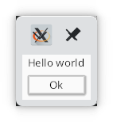

Hello World!
Topics: logging, shell, run

Lets get started with a simple message box. Source.
use kas::widgets::dialog::MessageBox; fn main() -> Result<(), Box<dyn std::error::Error>> { env_logger::init(); let window = MessageBox::new("Message", "Hello world"); let theme = kas::theme::FlatTheme::new(); kas::shell::Toolkit::new(theme)?.with(window)?.run() }
cargo run --example hello
Logging
Enabling a logger is optional, but can be very useful for debugging:
#![allow(unused)] fn main() { env_logger::init(); }
KAS uses the log facade internally. To see the
output, we need an implementation, such as
env_logger.
Trace level can be a bit chatty; to get a reasonable level of output you might try this:
export RUST_LOG=warn,naga=error,kas=debug
cargo run --example hello
A window, a shell
Next, we define our window. For this example, we use kas::widgets::dialog::MessageBox.
#![allow(unused)] fn main() { use kas::widgets::dialog::MessageBox; let window = MessageBox::new("Message", "Hello world"); }
This line doesn't actually do anything besides creating a "window" object.
A window is any type implementing the Window trait.
use kas::widgets::dialog::MessageBox; fn main() -> Result<(), Box<dyn std::error::Error>> { let window = MessageBox::new("Message", "Hello world"); let theme = kas::theme::FlatTheme::new(); kas::shell::Toolkit::new(theme)?.with(window)?.run() }
kas::shell::Toolkit is the "shell", providing bindings to windowing and
graphics functionality (at the time of writing, via Winit and WGPU).
One could write their own shell (e.g. to embed KAS), but that would be an
advanced topic (and breaking new ground).
High-level drawing and sizing is handled by a "theme", which we provide to the
toolkit. Writing a custom theme is another advanced (but better tested) topic.
Here we just use FlatTheme.
Finally, Toolkit::run starts our UI. This method does not return (see
winit::event_loop::EventLoop::run documentation).
The toolkit (and program) will exit after all windows have closed.